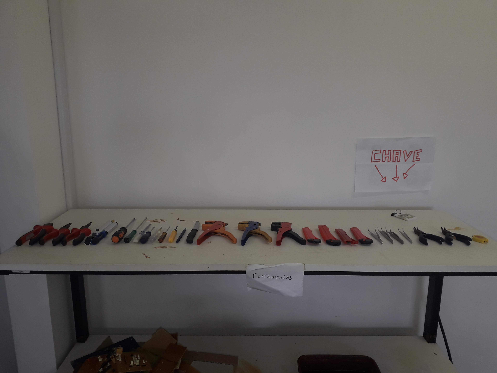

1 / 3

Lab de Robótica
2 / 3

Entrada do IFRN
3 / 3

Projeto Race
Yuri menezes andrade nascido em Cuiabá no ano de 2002 vem morar no RN em 2016 quando fez o concurso para ingressar no Ensino Médio Técnico em Informática no IFRN Santa Cruz iniciando suas atividades no IF no ano de 2017 onde se empenhou em diversos trabalhos de cunho acadêmico.
Um dos primeiros projetos engressados no ano de 2017 foi a robótica. Sendo a robótica um ramo educacional e tecnológico que trata de sistemas compostos por partes mecânicas automáticas e controladas por circuitos integrados, tornando sistemas mecânicos motorizados controlados automaticamente por circuitos elétricos, sendo uma metodologia de ensino que tem como objetivo fomentar no aluno a investigação e materialização dos conceitos aprendidos no conteúdo curricular. Vai muito além da construção de projetos e programação de robôs. Proporciona um aprendizado prático que desenvolve no aluno a capacidade de pensar e achar soluções aos desafios propostos. Incentiva o trabalho em grupo, a cooperação, planejamento, pesquisa, tomada de decisões, definição de ações, promove o diálogo e o respeito a diferentes opiniões.
O segundo trabalho ingressado foi o race no ano de 2018 , que é é um projeto que visa a aplicação da Robótica Educacional para crianças com Autismo por meio da montagem e programação de robôs de LEGO. Com o objetivo de aprimorar o vínculo da criança com a tecnologia e desenvolver habilidades motoras e sociais, que podem ser escassas, de acordo com as características da condição autista presente no participante. Para a aplicação do projeto, os integrantes utilizam nas oficinas uma programação, que é feita de acordo com o propósito da sessão, facilitada para melhor entendimento da criança; além de um manual com toda a montagem organizada por peças pré-montadas, e por último, materiais didáticos de apoio que simulam condições diárias ou problemas sociais.
O terceiro projeto foi o IPS no ano de 2018-2019, que é um trabalho onde foi buscada a convergência entre tecnologias já existentes no IFRN – Campus Santa Cruz por meio do software IPS, que realiza a comunicação entre eles, de forma que permite trocas de informações. O projeto IPS realiza comunicações via RMI (invocação de métodos remotos) com um deles e distribui os dados para a outra aplicação. Os softwares em questão são um placar virtual, chamado Placar Poliesportivo, o qual é utilizado atualmente nas competições internas de âmbito esportivo do campus; o outro, de nome IF Play, é um software de virtualização dos eventos ocorridos nessas competições. Os métodos utilizados focaram no recebimento dos dados gerados pelo placar , por meio da conexão via RMI feita entre ele e o IPS, para a inserção destes na base de dados do IF Play, de forma que esta aplicação necessita dessas informações para realizar uma das suas funcionalidades; e no prestamento de suporte para o IF Play, inserindo outros dados necessários na base de dados.